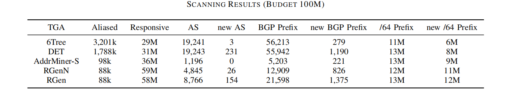
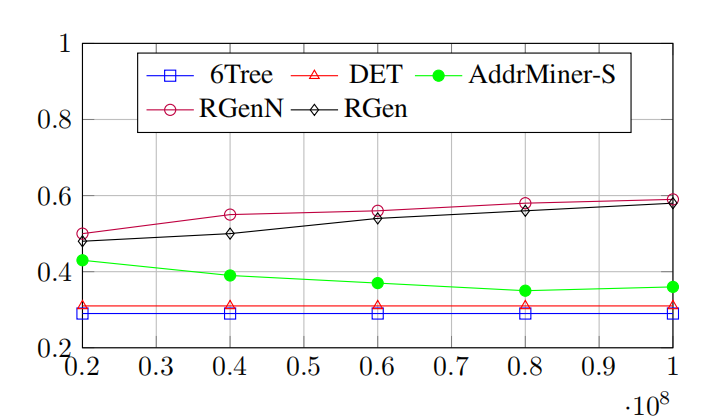
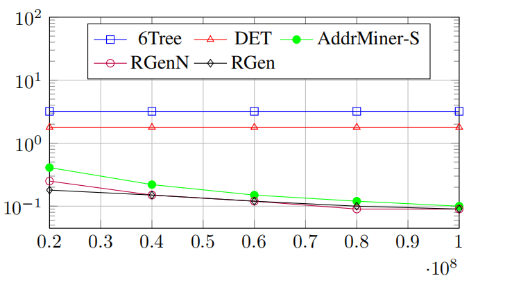
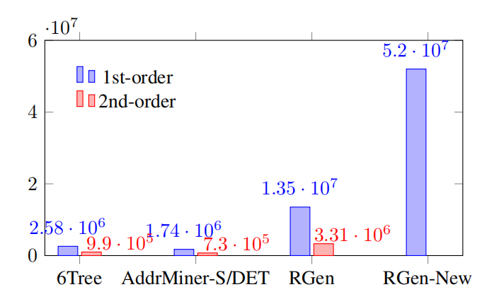
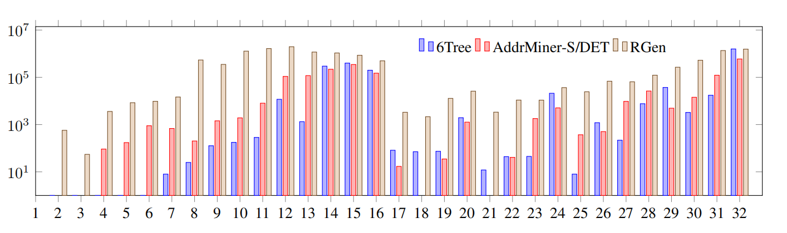
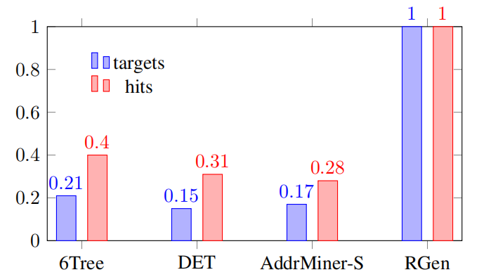
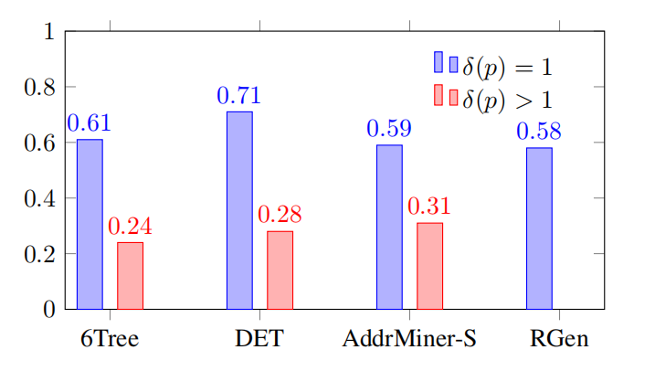
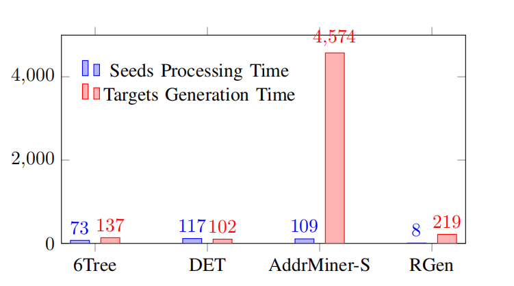
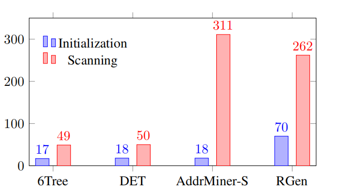

RGen: A Real-Time Pattern Mining Approach to Target Generation for Internet-wide IPv6 Scanning
RGen:一种用于互联网范围IPv6扫描目标生成的实时模式挖掘方法

SCANNING RESULTS (BUDGET 100M)

Hit Rate

Aliased Ratio(%)

Number of Patterns

Distribution of Variable Positions in 1st-order Patterns

The proportion of targets and hits in 1st-order patterns

The hit rates of 1st-order patterns and higher-order patterns

Running Time (min)

Memory Usage (GB)